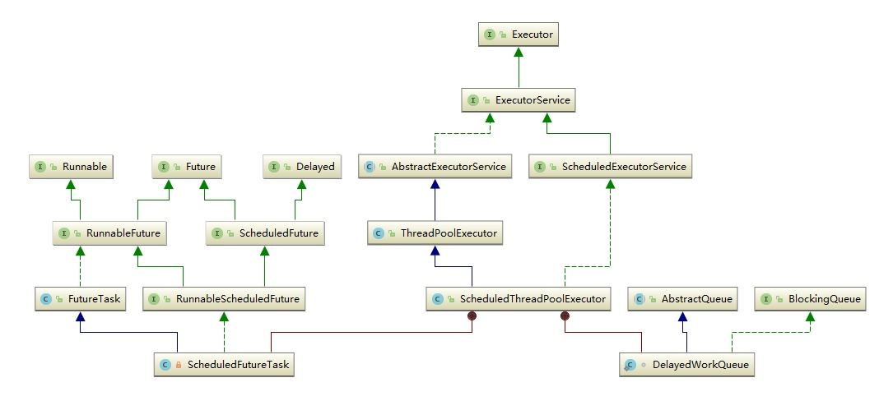

ScheduledThreadPoolExecutor要解决什么样的问题?
ScheduledThreadPoolExecutor相比ThreadPoolExecutor有哪些特性?
ScheduledThreadPoolExecutor有什么样的数据结构，核心内部类和抽象类?
ScheduledThreadPoolExecutor有哪两个关闭策略? 区别是什么?
ScheduledThreadPoolExecutor中scheduleAtFixedRate 和 scheduleWithFixedDelay区别是什么?
为什么ThreadPoolExecutor 的调整策略却不适用于 ScheduledThreadPoolExecutor?
Executors 提供了几种方法来构造 ScheduledThreadPoolExecutor?
ScheduledThreadPoolExecutor继承自 ThreadPoolExecutor，为任务提供延迟或周期执行，属于线程池的一种。和 ThreadPoolExecutor 相比，它还具有以下几种特性:
使用专门的任务类型—ScheduledFutureTask 来执行周期任务，也可以接收不需要时间调度的任务(这些任务通过 ExecutorService 来执行)。
使用专门的存储队列—DelayedWorkQueue 来存储任务，DelayedWorkQueue 是无界延迟队列DelayQueue 的一种。相比ThreadPoolExecutor也简化了执行机制(delayedExecute方法，后面单独分析)。
支持可选的run-after-shutdown参数，在池被关闭(shutdown)之后支持可选的逻辑来决定是否继续运行周期或延迟任务。并且当任务(重新)提交操作与 shutdown 操作重叠时，复查逻辑也不相同。

ScheduledThreadPoolExecutor继承自 ThreadPoolExecutor线程池
ScheduledThreadPoolExecutor 内部构造了两个内部类 ScheduledFutureTask 和 DelayedWorkQueue
ScheduledFutureTask: 继承了FutureTask，说明是一个异步运算任务；最上层分别实现了Runnable、Future、Delayed接口，说明它是一个可以延迟执行的异步运算任务。
DelayedWorkQueue: 这是 ScheduledThreadPoolExecutor 为存储周期或延迟任务专门定义的一个延迟队列，继承了 AbstractQueue，为了契合 ThreadPoolExecutor 也实现了 BlockingQueue 接口。它内部只允许存储 RunnableScheduledFuture 类型的任务。与 DelayQueue 的不同之处就是它只允许存放 RunnableScheduledFuture 对象，并且自己实现了二叉堆(DelayQueue 是利用了 PriorityQueue 的二叉堆结构)
//为相同延时任务提供的顺序编号
private final long sequenceNumber;
//任务可以执行的时间，纳秒级
private long time;
//重复任务的执行周期时间，纳秒级。
private final long period;
//重新入队的任务
RunnableScheduledFuture<V> outerTask = this;
//延迟队列的索引，以支持更快的取消操作
int heapIndex;
sequenceNumber: 当两个任务有相同的延迟时间时，按照 FIFO 的顺序入队。sequenceNumber 就是为相同延时任务提供的顺序编号。
time: 任务可以执行时的时间，纳秒级，通过triggerTime方法计算得出。
period: 任务的执行周期时间，纳秒级。正数表示固定速率执行(为scheduleAtFixedRate提供服务)，负数表示固定延迟执行(为scheduleWithFixedDelay提供服务)，0表示不重复任务。
outerTask: 重新入队的任务，通过reExecutePeriodic方法入队重新排序。
public void run() {
boolean periodic = isPeriodic();//是否为周期任务
if (!canRunInCurrentRunState(periodic))//当前状态是否可以执行
cancel(false);
else if (!periodic)
//不是周期任务，直接执行
ScheduledFutureTask.super.run();
else if (ScheduledFutureTask.super.runAndReset()) {
setNextRunTime();//设置下一次运行时间
reExecutePeriodic(outerTask);//重排序一个周期任务
}
}
ScheduledFutureTask 的run方法重写了 FutureTask 的版本，以便执行周期任务时重置/重排序任务。任务的执行通过父类 FutureTask 的run实现。内部有两个针对周期任务的方法:
//设置下一次执行任务的时间
private void setNextRunTime() {
long p = period;
if (p > 0) //固定速率执行，scheduleAtFixedRate
time += p;
else
time = triggerTime(-p); //固定延迟执行，scheduleWithFixedDelay
}
//计算固定延迟任务的执行时间
long triggerTime(long delay) {
return now() +
((delay < (Long.MAX_VALUE >> 1)) ? delay : overflowFree(delay));
}
//重排序一个周期任务
void reExecutePeriodic(RunnableScheduledFuture<?> task) {
if (canRunInCurrentRunState(true)) {//池关闭后可继续执行
super.getQueue().add(task);//任务入列
//重新检查run-after-shutdown参数，如果不能继续运行就移除队列任务，并取消任务的执行
if (!canRunInCurrentRunState(true) && remove(task))
task.cancel(false);
else
ensurePrestart();//启动一个新的线程等待任务
}
}
reExecutePeriodic与delayedExecute的执行策略一致，只不过reExecutePeriodic不会执行拒绝策略而是直接丢掉任务
public boolean cancel(boolean mayInterruptIfRunning) {
boolean cancelled = super.cancel(mayInterruptIfRunning);
if (cancelled && removeOnCancel && heapIndex >= 0)
remove(this);
return cancelled;
}
ScheduledFutureTask.cancel本质上由其父类 FutureTask.cancel 实现。取消任务成功后会根据removeOnCancel参数决定是否从队列中移除此任务
//关闭后继续执行已经存在的周期任务
private volatile boolean continueExistingPeriodicTasksAfterShutdown;
//关闭后继续执行已经存在的延时任务
private volatile boolean executeExistingDelayedTasksAfterShutdown = true;
//取消任务后移除
private volatile boolean removeOnCancel = false;
//为相同延时的任务提供的顺序编号，保证任务之间的FIFO顺序
private static final AtomicLong sequencer = new AtomicLong();
continueExistingPeriodicTasksAfterShutdown和executeExistingDelayedTasksAfterShutdown是 ScheduledThreadPoolExecutor 定义的 run-after-shutdown 参数，用来控制池关闭之后的任务执行逻辑。
removeOnCancel用来控制任务取消后是否从队列中移除。当一个已经提交的周期或延迟任务在运行之前被取消，那么它之后将不会运行。默认配置下，这种已经取消的任务在届期之前不会被移除。 通过这种机制，可以方便检查和监控线程池状态，但也可能导致已经取消的任务无限滞留。为了避免这种情况的发生，我们可以通过setRemoveOnCancelPolicy方法设置移除策略，把参数removeOnCancel设为true可以在任务取消后立即从队列中移除。
sequencer是为相同延时的任务提供的顺序编号，保证任务之间的 FIFO 顺序。与 ScheduledFutureTask 内部的sequenceNumber参数作用一致。
ScheduledThreadPoolExecutor 内部有四个构造函数，这里我们只看这个最大构造灵活度的, 通过super调用了ThreadPoolExecutor的构造，并且使用特定等待队列DelayedWorkQueue:
public ScheduledThreadPoolExecutor(int corePoolSize,
ThreadFactory threadFactory,
RejectedExecutionHandler handler) {
super(corePoolSize, Integer.MAX_VALUE, 0, NANOSECONDS,
new DelayedWorkQueue(), threadFactory, handler);
}
public <V> ScheduledFuture<V> schedule(Callable<V> callable,
long delay,
TimeUnit unit) {
if (callable == null || unit == null)
throw new NullPointerException();
RunnableScheduledFuture<V> t = decorateTask(callable,
new ScheduledFutureTask<V>(callable, triggerTime(delay, unit)));//构造ScheduledFutureTask任务
delayedExecute(t);//任务执行主方法
return t;
}
schedule主要用于执行一次性(延迟)任务。
首先通过triggerTime计算任务的延迟执行时间，然后通过 ScheduledFutureTask 的构造函数把 Runnable/Callable 任务构造为ScheduledThreadPoolExecutor可以执行的任务类型，最后调用decorateTask方法执行用户自定义的逻辑；decorateTask是一个用户可自定义扩展的方法，默认实现下直接返回封装的RunnableScheduledFuture任务
protected <V> RunnableScheduledFuture<V> decorateTask(
Runnable runnable, RunnableScheduledFuture<V> task) {
return task;
}
private void delayedExecute(RunnableScheduledFuture<?> task) {
if (isShutdown())
reject(task);//池已关闭，执行拒绝策略
else {
super.getQueue().add(task);//任务入队
if (isShutdown() &&
!canRunInCurrentRunState(task.isPeriodic()) &&//判断run-after-shutdown参数
remove(task))//移除任务
task.cancel(false);
else
ensurePrestart();//启动一个新的线程等待任务
}
}
delayedExecute是执行任务的主方法，方法执行逻辑如下:
如果池已关闭(ctl >= SHUTDOWN)，执行任务拒绝策略；
池正在运行，首先把任务入队排序；然后重新检查池的关闭状态
如果池正在运行，或者 run-after-shutdown 参数值为true，则调用父类 ThreadPoolExecutor 的方法 ensurePrestart 启动一个新的线程等待执行任务，即使corePoolSize为0也会安排一个新线程。
void ensurePrestart() {
int wc = workerCountOf(ctl.get());
if (wc < corePoolSize)
addWorker(null, true);
else if (wc == 0)
addWorker(null, false);
}
如果池已经关闭，并且 run-after-shutdown 参数值为false，则执行父类(ThreadPoolExecutor)方法remove移除队列中的指定任务，成功移除后调用ScheduledFutureTask.cancel取消任务。
/**
* 创建一个周期执行的任务，第一次执行延期时间为initialDelay，
* 之后每隔period执行一次，不等待第一次执行完成就开始计时
*/
public ScheduledFuture<?> scheduleAtFixedRate(Runnable command,
long initialDelay,
long period,
TimeUnit unit) {
if (command == null || unit == null)
throw new NullPointerException();
if (period <= 0)
throw new IllegalArgumentException();
//构建RunnableScheduledFuture任务类型
ScheduledFutureTask<Void> sft =
new ScheduledFutureTask<Void>(command,
null,
triggerTime(initialDelay, unit),//计算任务的延迟时间
unit.toNanos(period));//计算任务的执行周期
RunnableScheduledFuture<Void> t = decorateTask(command, sft);//执行用户自定义逻辑
sft.outerTask = t;//赋值给outerTask，准备重新入队等待下一次执行
delayedExecute(t);//执行任务
return t;
}
/**
* 创建一个周期执行的任务，第一次执行延期时间为initialDelay，
* 在第一次执行完之后延迟delay后开始下一次执行
*/
public ScheduledFuture<?> scheduleWithFixedDelay(Runnable command,
long initialDelay,
long delay,
TimeUnit unit) {
if (command == null || unit == null)
throw new NullPointerException();
if (delay <= 0)
throw new IllegalArgumentException();
//构建RunnableScheduledFuture任务类型
ScheduledFutureTask<Void> sft =
new ScheduledFutureTask<Void>(command,
null,
triggerTime(initialDelay, unit),//计算任务的延迟时间
unit.toNanos(-delay));//计算任务的执行周期
RunnableScheduledFuture<Void> t = decorateTask(command, sft);//执行用户自定义逻辑
sft.outerTask = t;//赋值给outerTask，准备重新入队等待下一次执行
delayedExecute(t);//执行任务
return t;
}
scheduleAtFixedRate和scheduleWithFixedDelay方法的逻辑与schedule类似。
注意scheduleAtFixedRate和scheduleWithFixedDelay的区别:
池关闭方法调用了父类 ThreadPoolExecutor 的 shutdown,
这里主要介绍以下在 shutdown 方法中调用的关闭钩子 onShutdown 方法，它的主要作用是在关闭线程池后取消并清除由于关闭策略不应该运行的所有任务，这里主要是根据 run-after-shutdown 参数(continueExistingPeriodicTasksAfterShutdown和executeExistingDelayedTasksAfterShutdown)来决定线程池关闭后是否关闭已经存在的任务。
public void shutdown() {
super.shutdown();
}
//取消并清除由于关闭策略不应该运行的所有任务
@Override void onShutdown() {
BlockingQueue<Runnable> q = super.getQueue();
//获取run-after-shutdown参数
boolean keepDelayed =
getExecuteExistingDelayedTasksAfterShutdownPolicy();
boolean keepPeriodic =
getContinueExistingPeriodicTasksAfterShutdownPolicy();
if (!keepDelayed && !keepPeriodic) {//池关闭后不保留任务
//依次取消任务
for (Object e : q.toArray())
if (e instanceof RunnableScheduledFuture<?>)
((RunnableScheduledFuture<?>) e).cancel(false);
q.clear();//清除等待队列
}
else {//池关闭后保留任务
// Traverse snapshot to avoid iterator exceptions
//遍历快照以避免迭代器异常
for (Object e : q.toArray()) {
if (e instanceof RunnableScheduledFuture) {
RunnableScheduledFuture<?> t =
(RunnableScheduledFuture<?>)e;
if ((t.isPeriodic() ? !keepPeriodic : !keepDelayed) ||
t.isCancelled()) { // also remove if already cancelled
//如果任务已经取消，移除队列中的任务
if (q.remove(t))
t.cancel(false);
}
}
}
}
tryTerminate(); //终止线程池
}
例如: 由于 ScheduledThreadPoolExecutor 是一个固定核心线程数大小的线程池，并且使用了一个无界队列，所以调整 maximumPoolSize 对其没有任何影响(所以 ScheduledThreadPoolExecutor 没有提供可以调整最大线程数的构造函数，默认最大线程数固定为Integer.MAX_VALUE)。此外，设置corePoolSize为0或者设置核心线程空闲后清除(allowCoreThreadTimeOut)同样也不是一个好的策略，因为一旦周期任务到达某一次运行周期时，可能导致线程池内没有线程去处理这些任务。